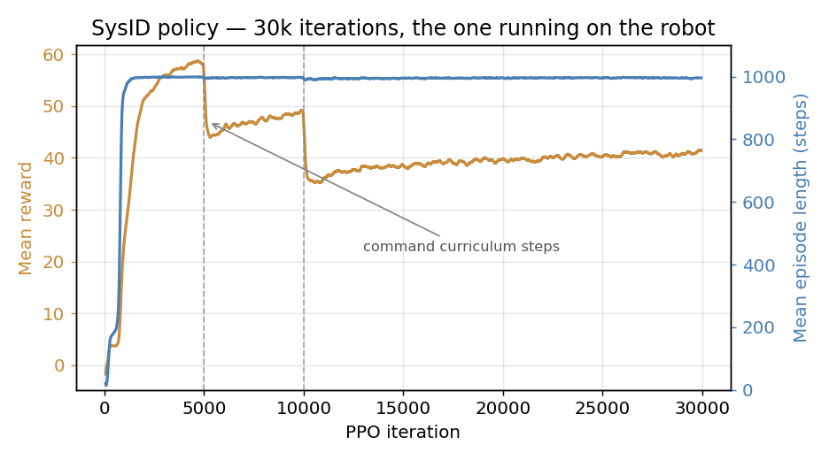
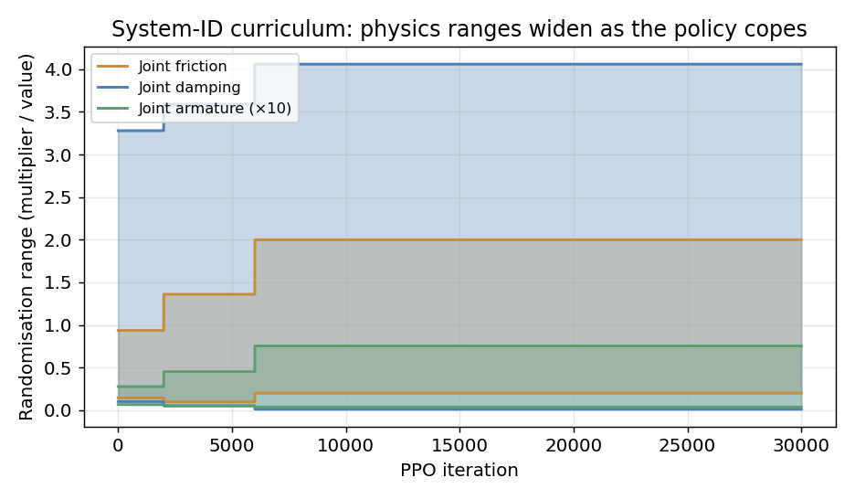
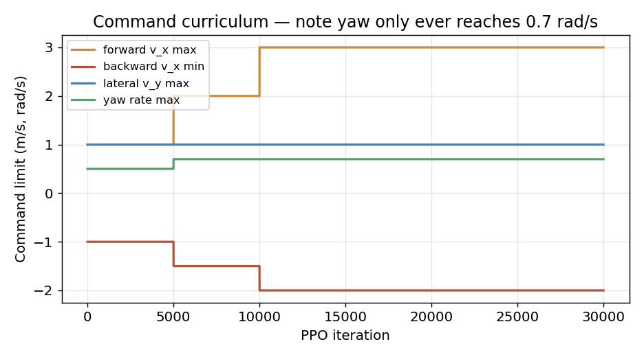

← All projectsUnitree G1 · RL Locomotion from Simulation onto the Real Robot
In Progress · Reinforcement Learning & Sim-to-Real
Unitree G1 · RL Locomotion from Simulation onto the Real Robot
Personal research project · mjlab / MuJoCo Warp · PPO + system-ID randomisation · deployed over CycloneDDS
Sep 2026 – ongoing
In progress
Working today: a velocity policy trained under a measured system-ID randomisation curriculum,
exported to ONNX and walking on the physical 29-DoF Unitree G1 at 50 Hz over CycloneDDS.
Five policies trained, three taken to hardware, one that walks. Also validated sim-to-sim in
Isaac Sim on PhysX over a 56 m warehouse route. Being built now: RGB-D mapping from the
robot's head camera, and a human-gait retrain to fix the shuffling stride both simulators show.
Every number below is from my own runs or my own robot.
Most published humanoid locomotion stops at a policy that tracks a commanded body-frame twist, and
more often than not never leaves simulation. I trained one in mjlab, a MuJoCo-Warp RL
framework, for 30 000 PPO iterations on a single 8 GB laptop GPU — then got it onto the real
29-DoF machine.
The version that transferred is the second one, trained under a system-identification
curriculum: joint friction, damping, armature, actuator effort limits and PD gains are
randomised per episode, and the ranges come from chirp sweeps measured on the actual robot
rather than from guesswork. The interesting part is not that it walks — it is the list of
things it does worse on hardware than in simulation, which is measured and written down
below rather than left out.
sustained walking speed on the real G1 — the transfer that worked, of three tried
−31%
held-out joint-tracking error after chirp system ID on 12 leg joints
3e−6
parity between the deploy runtime and training, checked before touching hardware
56 m
Isaac Sim warehouse route on PhysX, two aisles and a box slalom, no fall
Simulation. The scripted distance sequence in mjlab — 2 m forward, 1 m back,
0.5 m right, 0.5 m left, 1 m back, with two-second holds between moves. The blue arrow is the
commanded twist, the magenta markers are foot contacts. This is the run the move durations were
calibrated from — and the recorder reads the command schedule out of the robot script rather than
keeping its own copy, so the two sides cannot silently drift apart.Real robot. The same ONNX policy and the same schedule, on the physical G1 over
CycloneDDS, recorded the same afternoon as the run on the left. The gantry strap is slack — it is
a fall-arrest, not a support. Timings are open loop: there is no position feedback anywhere in
this stack, so the distances come from durations calibrated in simulation.
Training the Policy That Actually Deployed
Deliberately one consumer GPU. If a humanoid policy needs a cluster to reproduce, most people cannot check your work.
Robot & Task
Unitree G1, 29 actuated DoF. mjlab task Velocity-Flat-Unitree-G1-SysID: track a commanded body-frame twist on flat ground while the simulator's physical parameters are resampled every episode.
Observation & Action
96-dim: gyro (3) + projected gravity (3) + joint position error (29) + joint velocity (29) + previous action (29) + command (3). Action is 29 joint targets, applied as q = qdefault + scale · a. No height, no velocity estimate, nothing the real robot cannot measure.
Command Curriculum
Command ranges widen as tracking error stays in tolerance: vx [−1, 1] → [−2, 3] m/s, yaw rate 0.5 → 0.7 rad/s. That yaw ceiling turns out to matter a great deal — see the limits below.
Run
30 000 iterations, ~37 800 simulation steps/s. Mean reward −1.26 → 41.9; mean episode length 12.9 → 994.8 steps against a 1000-step cap; fall terminations 0.04.

Reward and episode length — the drops are command-curriculum steps

Physics randomisation bands widening as the policy copes

Command limits — yaw never trained past 0.7 rad/s
Getting It Onto the Robot
The gap between a trained checkpoint and a walking machine is mostly plumbing, and the plumbing is where it goes wrong.
Link
Laptop to robot over Ethernet, Unitree SDK2 on CycloneDDS. Robot enters debug mode from zero-torque, hung on a gantry for every first run of a new policy.
Control Loop
50 Hz (2 ms sim step × 4 decimation). Read low state → assemble the 96-dim observation → ONNX Runtime on CPU → 29 position targets with the policy's own kp/kd → publish with CRC.
Safety
A --dry-run mode that reads sensors and runs the policy but publishes nothing; START moves smoothly to the default pose over 3 s before anything else; a tilt watchdog drops to damping if projected gravity says the pelvis is past ~53°; SELECT and Ctrl+C both land in damping.
Three Ways to Drive It
Remote-stick teleop, laptop keyboard hold-to-move (X11 global key capture, so it works from any window), and scripted timed sequences for repeatable demos and for filming.
Five Policies, Three Taken to Hardware, One That Walks
Keeping the failures in the ledger is the point — the difference between the one that walks and the ones that froze is the whole result.
Policy
Obs
What changed
On hardware
#1 velocity
99
baseline; base linear velocity in the actor
froze on the ground
#2 no-BLV
96
velocity moved to the critic; hand-tuned randomisation
never run — yaw 57% worse
#3 sysID
96
randomisation from measured parameters
◆ walks · 0.578 m/s
#4 payload
474
5-frame history, height command, 0–15 kg payload, pushes
froze on the ground
#3b turn
96
#3 fine-tuned 6k iters on turn-in-place
not yet — turn 0.32 → 0.54 rad/s
Diagnosing the freeze mattered more than fixing it. On the policies that stalled,
torque was being delivered — commanded and estimated torque agreed to within a few percent.
The ankle pitch joint was binding at about 0.45 rad of error at 13 N·m with zero velocity, while
hips and knees tracked fine. Since #3 walks on the same hardware with the same ankle linkage, the
cause is not a modelling error in the ankle's four-bar approximation — it is that #1 and #4 learned
gaits that lean on ankle authority the real actuator does not have. The MJCF had zero joint friction
and damping, so in simulation that authority was free.
System ID · Measuring the Robot Instead of Guessing Its Randomisation Ranges
Chirp excitation on all 12 leg joints with the robot hoisted and its feet clear of the floor; pelvis welded, collisions off, legs only. Fitted on two sweeps, validated on two held out.
Model
Held-out sweep
Open-loop RMSE
Nominal MJCF
chirp_0
0.0365 rad
as shipped
Identified
chirp_0
◆ 0.0251 rad
−31%
Identified
chirp at different kp
0.0246 rad
generalises off the fitted gains
Run-to-run repeatability floor
0.0051 rad
the best any model could do
Armature, damping and friction were fitted per joint, then the randomisation range for each was
scaled by how identifiable that parameter actually was — wide where the fit was uncertain,
tight where it was well constrained. That is the only substantive difference between policy #2 and
policy #3, and it is the difference between a robot that freezes and one that walks.
What this does not cover: the sweeps were run with no ground contact, no body load
and no base motion. The identified numbers describe a hoisted leg, not a walking one.
Two Checks Before Any Policy Touches the Robot
A humanoid that fails on hardware can damage itself. Both of these are cheap and catch different classes of error.
01A parity harness, down to 3e−6. The deployment runtime rebuilds the observation
vector from scratch out of raw sensor packets, with its own joint ordering, scaling and history
buffers. The harness feeds identical states through both the training environment and the ONNX
deploy path and asserts the observations and actions agree to 3e−6. A silently permuted
joint index produces a policy that looks fine in simulation and falls over immediately — and is
invisible to any test that only checks shapes.
02Sim-to-sim in a different physics engine. The exact MJCF is converted to USD and the same
ONNX policy is run in Isaac Sim 5.0 on PhysX — a completely independent contact solver. Policy #3
completed a 56 m warehouse route through two aisles, a box slalom and two 90° turns with
no fall. Agreement across two engines is much weaker evidence than hardware, but it is far
stronger than one simulator agreeing with itself, and it costs no robot time.
03Both simulators then agreed on something I had not been looking for. Every policy steps at
3.2–4.4 steps/s with 13–18 cm strides. A human walks at roughly 1.7 steps/s with 37 cm strides.
The policies are not walking, they are shuffling — fast, stable and visibly wrong, with 45–50°/s
RMS of head shake that would wreck any head-mounted camera. It is policy-intrinsic: the air-time
and soft-landing rewards are weighted zero and there is no gait clock. A reward that only asks for
velocity tracking and not falling gets exactly this.
What the Hardware Says the Policy Cannot Do
Measured in simulation and confirmed on the robot. These are the reasons the next training run exists.
Command
Behaviour
Diagnosis
Forward ≤ 0.3 m/s
Stands still, does not step
deadband — no reward for stepping slowly
Forward ≥ 0.45 m/s
Walks reliably
commanded 0.6 → ~0.5 m/s actual
Sideways < 0.55 m/s
Does not step
same deadband, wider
Turn in place
◆ Unreliable
trained yaw only reached ±0.5 rad/s
Turn while walking
Reliable both directions
inside the trained distribution
The turn-in-place failure is the instructive one. Commanding ωz = 1.0–1.2 rad/s sometimes
works and sometimes does not — on the robot it turned right, then refused to turn left. That is not
flakiness, it is extrapolation: the command curriculum never took yaw past
0.7 rad/s, so every in-place turn asks the policy for something outside the distribution it was
trained on, and whether it complies depends on the pose it happens to be in. The teleop scripts cap
yaw at 1.2 rad/s precisely because pushing further is not more reliable, just faster when it works.
The fix belonged in training, not in the controller. Tuning the deadband out at
the teleop layer would only have hidden it. Fine-tuning #3 for 6 000 iterations with 30% of
environments on turn-in-place commands took yaw rate from 0.32 to 0.54 rad/s and
walking from 0.578 to 0.625 m/s — and Isaac Sim confirms it turns in place on PhysX too, at
1.03 rad/s one way and 0.57 the other, so the asymmetry has not gone, only shrunk. That policy has
not been put on the robot yet.
What Transferring It Taught Me
The things that were not obvious until the policy was on a real machine.
01Put the gains inside the exported model. kp, kd, the default pose and the action scale are
written into the ONNX metadata and read back at deploy time. The alternative — a constants block
in the deployment script — is a second source of truth for numbers that must match training
exactly, and it will drift the first time a policy is retrained.
02The observation was designed backwards from the robot. Gyro, projected gravity, joint
positions and velocities, previous action — all of it comes out of one low-state packet. No base
linear velocity, no height, no privileged state. A policy that consumes anything else needs a
state estimator before it can be deployed at all, which is exactly why policy #1 required a
velocity source on hardware and policy #3 did not.
03Open-loop distance is good enough to be useful and bad enough to be honest. There is no
position feedback anywhere in this stack: each move is a commanded velocity held for a duration
calibrated in simulation. That lands within about ±0.3 m over a 2 m move — fine for a demo,
nowhere near enough for navigation, which is what the mapping work is for.
Where This Is Going
Three threads, in rough order of how much they would change the result.
01Retrain for a human gait. Both simulators agree the policies shuffle — 3.2–4.4 steps/s at
13–18 cm against a human's 1.7 steps/s at 37 cm. The levers are known and all in the reward:
air time and soft landing currently carry zero weight, and there is no gait clock at all. This is
the change that would most alter how the robot actually looks and how usable its head camera is.
02Put the turn fine-tune on hardware. It is trained and validated in two simulators; only
the gantry session is outstanding. The payload policy needs a separate look — it carries 10 kg
and crouches to 0.52 m in simulation but froze on the ground, and it is the same ankle-authority
story as #1.
03RGB-D mapping from the robot's own head camera. The D435i into RTAB-Map over ROS 2,
recorded to a bag during a scripted walk and replayed offline so the map is built from the robot's
real trajectory. Once there is a map, the open-loop distance schedule can be replaced by something
that knows where the robot is — the point at which this stops being dead reckoning. The shuffling
gait's 45–50°/s of head shake is a direct problem for this, which is why the gait retrain comes
first.
My contribution
Training and tuning the velocity policies, including the system-ID randomisation curriculum that
made transfer work, and reading the runs to separate curriculum effects from real regressions.
The entire real-robot deployment: ONNX export with embedded gains, the 50 Hz CycloneDDS control
loop, tilt watchdog and dry-run mode, remote-stick and keyboard teleop, the scripted distance
sequences, and the sim recorder that drives off the same schedule file. Network and SDK bring-up
on the robot and the Jetson.
Upstream · unmodified
mjlab (MuJoCo Lab) — the MuJoCo-Warp RL framework, the G1 asset, the velocity task and
its reward terms, and the rsl-rl PPO implementation. Unitree SDK2 (Python) and CycloneDDS for the
robot link. Nothing in mjlab's src/ is patched; my code sits alongside it.
Method reference
Gait-Conditioned Reinforcement Learning with Multi-Phase Curriculum for Humanoid Locomotion,
Peng, Bao & Zhou (UCL) — the reference for the multi-gait direction. None of their code is
used here.